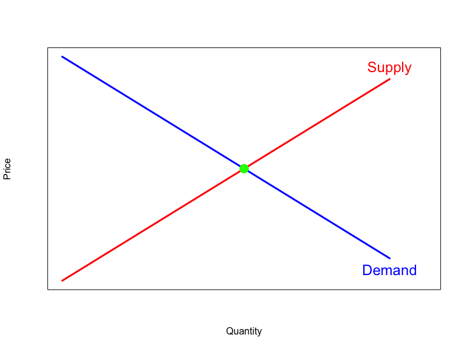
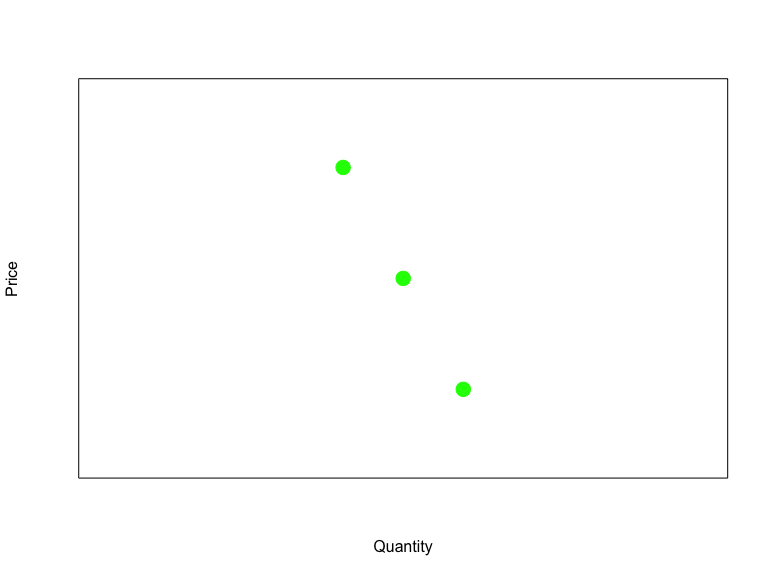
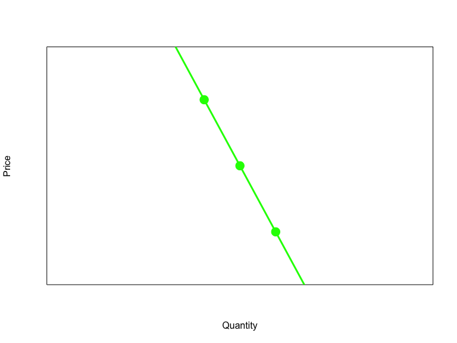
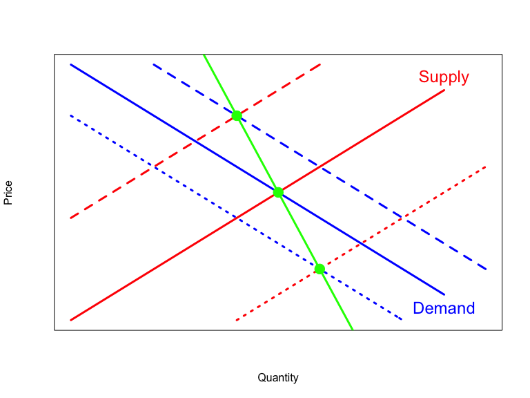
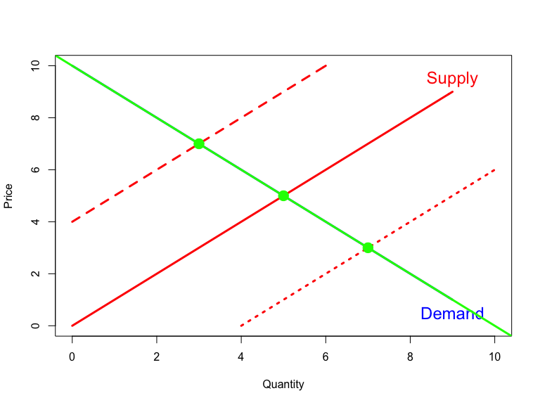

Based on Stock and Watson, ch. 12




Fitting a line to equilibrium price and quantity data by OLS estimates neither a demand nor a supply function
Problem: prices and quantities have been simultaneously determined by changes in both demand and supply
Solution: find third variable that shifts supply only, called an instrumental variable

\[\ln Q^{\text{cig}}_i = \beta_0 + \beta_1 \ln P^{\text{cig}}_i + \beta_2 \ln Inc_i + u_i\]
\(Q^{\text{cig}}_i\) is cigarette consumption in US state \(i\)
\(P^{\text{cig}}_i\) is the real after-tax cigarette price in US state \(i\)
Regressor \(P^{\text{cig}}_i\) is endogenous due to simultaneity
\(Inc_i\) is real per-capita state income in US state \(i\)
Regressor \(Inc_i\) is treated as an exogenous variable
\(u_i\) is an error term (omitted variables, measurement errors)
\(SalesTax_i\) is real sales tax per pack in US state \(i\)
Variable \(SalesTax_i\) is an instrumental variable
Parameter of interest is \(\beta_1\): the own price elasticity of cigarette consumption
The parameter \(\beta_1\) is over-identified if there are more than one instrumental variable
The parameter \(\beta_1\) is under-identified if there are no instrumental variables
The parameter \(\beta_1\) is exact-identified if there is exactly one instrumental variable
The 2SLS estimator in the general IV regression model is computed in two stages
First stage regression: regress \(P^{\text{cig}}_i\) on \(SalesTax_i\) and \(Inc_i\) using OLS. Compute fitted value \(\hat{P}^{\text{cig}}_i\).
Second stage regression: regress \(Q^{\text{cig}}_i\) on \(\hat{P}^{\text{cig}}_i\) and \(Inc_i\) using OLS. The 2SLS estimator \(\hat{\beta}_{1,2SLS}\) of \(\beta_1\) is the estimator of \(\beta_1\) from the second stage
The variables and errors in the IV regression model satisfy the following conditions
\(\mathrm{E}(u_i|Inc_i) = 0\)
\((Q^{\text{cig}}_i,P^{\text{cig}},Inc_i,SalesTax_i; i=1,\ldots,n)\) are i.i.d.
\(Q^{\text{cig}}_i\), \(P^{\text{cig}}_i\), \(Inc_i\), and \(SalesTax_i\) have nonzero finite 4th moments
The instrumental variable \(SalesTax_i\) is valid
The instrumental variable \(SalesTax_i\) must satisfy the following two conditions to be valid
Instrument relevance: the coefficient on \(SalesTax_i\) in the first stage population regression must be nonzero
Instrument exogeneity: \(SalesTax_i\) is uncorrelated with the error term \(u_i\) in the population regression model: \(\mathrm{cov}(SalesTax_i,u_i) = 0\)
Under the IV regression assumptions, the 2SLS estimator \(\hat{\beta}_{1,2SLS}\) is a consistent and asymptotically normal distributed estimator of \(\beta_1\):
\[\hat{\beta}_{1,2SLS} \overset{p}{\rightarrow} \beta_1\] and, at least in large samples,
\[\hat{\beta}_{1,2SLS} \overset{\text{approx.}}{\sim} \mathcal{N}\left(\beta_1,\sigma_{\hat{\beta}_{1,2SLS}}^2\right),\]
First stage regression split \(P^{\text{cig}}_i\) into exogenous and endogenous component
\[P^{\text{cig}}_i = \underset{\hat{P}^{\text{cig}}_i}{\underbrace{\hat{\pi}_0 + \hat{\pi}_1 SalesTax_i}} + \hat{w}_i \]
Second stage uses only the exogenous component \(\hat{P}^{\text{cig}}_i\) as a regressor in the cigarette demand equation, and OLS therefore consistently estimate \(\beta_1\) in the second stage
library(AER) # Load Applied Econometrics with R library
library(parameters) # Load parameters library
data(CigarettesSW) # Load CigarettesSW data from AER library
# Construct useful variables
CigarettesSW.1995 <- subset(CigarettesSW, year == "1995") # Select 1995 cross section
CigarettesSW.1995$price <- CigarettesSW.1995$price/CigarettesSW.1995$cpi # Real price (1995 prices)
CigarettesSW.1995$income <- CigarettesSW.1995$income/CigarettesSW.1995$cpi # Real income (1995 prices)
CigarettesSW.1995$taxs <- CigarettesSW.1995$taxs/CigarettesSW.1995$cpi # Real excise tax incl sales tax (1995 prices)
CigarettesSW.1995$tax <- CigarettesSW.1995$tax/CigarettesSW.1995$cpi # Real excise tax (1995 prices)
CigarettesSW.1995$SalesTax <- CigarettesSW.1995$taxs - CigarettesSW.1995$tax # Real sales tax (1995)
CigarettesSW.1995$incprcap <- CigarettesSW.1995$income/CigarettesSW.1995$population # Real income/cap# Naive OLS estimator
lm.ols <- lm(log(packs) ~ log(price) + log(incprcap), data = CigarettesSW.1995)
parameters(lm.ols, robust=TRUE, vcov_type="HC1") # Compute and print robust SEs## Parameter | Coefficient | SE | 95% CI | t | df | p
## --------------------------------------------------------------------------
## (Intercept) | 10.34 | 0.97 | [ 8.40, 12.29] | 10.70 | 45 | < .001
## price [log] | -1.41 | 0.26 | [-1.93, -0.88] | -5.39 | 45 | < .001
## incprcap [log] | 0.34 | 0.26 | [-0.18, 0.87] | 1.32 | 45 | 0.193# First stage regression: log price on SaleTax and Income
lm.1st.stage <- lm(log(price) ~ SalesTax + log(incprcap), data = CigarettesSW.1995)
parameters(lm.1st.stage, robust=TRUE, vcov_type="HC1") # Compute and print robust SEs## Parameter | Coefficient | SE | 95% CI | t | df | p
## ------------------------------------------------------------------------
## (Intercept) | 3.59 | 0.17 | [3.24, 3.94] | 20.79 | 45 | < .001
## SalesTax | 0.03 | 0.00 | [0.02, 0.04] | 6.69 | 45 | < .001
## incprcap [log] | 0.39 | 0.07 | [0.26, 0.52] | 5.95 | 45 | < .001# Second stage regression: log packs on fitted 1st stage values and Income
lm.2nd.stage <- lm(log(packs) ~ lm.1st.stage$fitted.values + log(incprcap), data = CigarettesSW.1995)
parameters(lm.2nd.stage, robust=TRUE, vcov_type="HC1") # Compute and print robust SEs## Parameter | Coefficient | SE | 95% CI | t | df | p
## --------------------------------------------------------------------------------------
## (Intercept) | 9.43 | 1.41 | [ 6.59, 12.27] | 6.68 | 45 | < .001
## lm.1st.stage$fitted.values | -1.14 | 0.41 | [-1.97, -0.32] | -2.79 | 45 | 0.008
## incprcap [log] | 0.21 | 0.35 | [-0.49, 0.92] | 0.62 | 45 | 0.541# IV regression of weeks worked on morekids w/ exogenous regressors, using samesex as IV
iv.2sls <- ivreg(log(packs) ~ log(price) + log(incprcap) | SalesTax + log(incprcap), data = CigarettesSW.1995)
parameters(iv.2sls, robust=TRUE, vcov_type="HC1") # Compute and print robust SEs## Parameter | Coefficient | SE | 95% CI | t | df | p
## --------------------------------------------------------------------------
## (Intercept) | 9.43 | 1.26 | [ 6.89, 11.97] | 7.49 | 45 | < .001
## price [log] | -1.14 | 0.37 | [-1.89, -0.39] | -3.07 | 45 | 0.004
## incprcap [log] | 0.21 | 0.31 | [-0.41, 0.84] | 0.69 | 45 | 0.495IV regressions offers a way to estimate causal effects in the presence of endogenous regressors
For an instrumental variable to be valid, it must be (1) correlated with the endogenous regressor, and (2) exogenous
The 2SLS estimator has two stages
First stage: regress endogenous regressor on IV and exogenous regressors
Second stage: regress dependent variable on fitted values from first stage and exogenous regressors
Implement 2SLS in R by ivreg from AER library